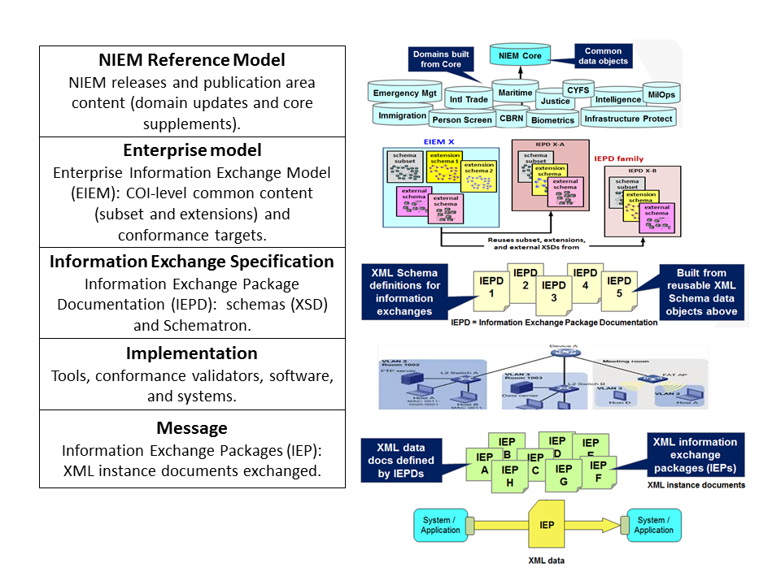

This FAQ relates best practices for NIEM IEPD change control and versioning. Before discussing these concepts as they relate specifically to an IEPD, we begin with an overview of the NIEM architecture, and follow that with several applicable FAQs about NIEM change control in general.
Please help improve this content by sending your feedback and additional questions!
The audience is intended to be NIEM IEPD developers and implementers who transmit or share NIEM IEPs based on one or more IEPDs. The scope covers all aspects of IEPD change control and versioning based on NIEM releases, including how NIEM releases relate to IEPDs and their implementations, compatibility, and what users and implementers should expect. The intent is to help the NIEM community understand how to implement NIEM effectively in the context of annual releases, and know the limitations and trade-offs.
As a point of reference, below is a very simple introduction to the NIEM architecture. The NIEM reference model (top layer) is a collection of XML Schema data components organized into NIEM Core and more specialized Domains. These components provide the NIEM common vocabulary, structures, and semantics.
(Skip the EIEM layer 2 for the moment.)
An IEPD (layer 3) defines a given recurring information exchange by reusing data components in a release of the NIEM reference model.
A NIEM implementation (layer 4) is the hardware/software/system infrastructure needed to send and receive NIEM IEPs (layer 5). These are XML instance documents that carry data and are defined by one or more IEPDs. To design/build an IEPD from a reference model, a developer assembles the required XML Schema data components into a subset of the reference model (reusing only the components needed). For requirements that NIEM cannot satisfy, the developer either extends existing components or creates new components (per the NIEM Naming and Design Rules (NDR)).
If a developer must design/build a set of IEPDs, it is sometimes more efficient to employ the EIEM architectural layer (layer 2). In this approach the developer builds a subset of all the data components needed for the set of IEPDs. The developer extends or creates as needed to satisfy missing requirements. Then the developer designs/builds a family of IEPDs reusing the master subset, associated extensions, and possibly external standards. (Note that the concept of the EIEM layer is still fairly immature and not yet normatively specified in NIEM. For more information, refer to the 2011 NIEM concept paper Business Information Exchange Components).

NIEM release versions currently available are: 1.0, 2.0, 2.1, and 3.0. These are all available for download at http://release.niem.gov/. There are also a few domain updates and core supplements that can be used in IEPDs available in the NIEM Publication Area at http://publication.niem.gov/niem/. Original Domain updates and Core supplements are always available in the Publication Area to use with the existing releases to which they apply. However, Domain updates and Core supplements are also harmonized with and integrated into the next major or minor release.
A NIEM schema document identifies its version within
the targetNamespace attribute owned by
the xs:schema.
The NIEM
NDR requires that every NIEM conformant schema document have a
unique targetNamespace. This includes all schema
documents in releases and domain updates, and that are IEPD
extensions. For example, within NIEM 3.0,
the targetNamespace for the Biometrics Domain schema
document (biom.xsd)
is http://release.niem.gov/niem/domains/biometrics/3.0/;
and the targetNamespace for the Justice Domain schema
document (jxdm.xsd)
is http://release.niem.gov/niem/domains/jxdm/5.0/.
(NOTE: The only exception to this rule is a NIEM subset schema. See
the next FAQ about subsets.) If no changes to a schema document are
required, then its targetNamespace will not change, and
the schema document will go forward into future releases as-is. Only
when the content of a schema document changes must
its targetNamespace change. When changed, generally
only the version identifier (3.0, 5.0,
etc.) portion of the targetNamespace URI will be
modified. However, this is only a convention, not a normative rule,
so in reality the entire targetNamespace string
determines the version of a NIEM schema document.
In NIEM, the targetNamespace of a subset schema
document based on a reference schema document (within a release)
is never unique. A subset schema document always takes the
targetNamespace of the reference schema document
from which it was built.
(See Model Package Description 3.0.1 for subsetting operations.)
This is because a subset schema is essentially a reduced copy (i.e.,
a subset) of that reference schema document. So, an XML document
instance defined by a subset schema document is also defined by its
associated reference schema document. And in fact, a conformant
subset schema document must be replaceable by the full reference
schema. This also explains why the targetNamespace for
a subset schema document does not change; each is based on a published
reference schema document.
targetNamespace or schema
document be changed?
An important practice is that after a NIEM XML schema document has
been officially released and published, neither its content nor
its targetNamespace can be changed. We say that
published NIEM reference schemas (releases) live forever. This policy
ensures that the official NIEM releases (i.e., reference models) are
always available to support information exchanges until an author or
sponsor is ready to change them.
No. Some standards development organizations (SDO) do not follow the
NIEM versioning policies. Some change content directly within a
published targetNamespace. Others use a similar
technique, but add a version identifier that is not a part of the
namespace. In such cases, it can be difficult to know if the content
of a namespace has changed (and which version you have). The NIEM
namespace policy ensures absolute transparency of change. If two NIEM
schema documents bear different target namespaces, then their content
is different. Furthermore, within NIEM artifacts that use them (such
as IEPDs), subset schema documents must be explicitly identified.
There is a bit of truth to this statement. A NIEM major series of
releases is numbered as follows: 3.0, 3.1, 3.2, etc. One and only one
NIEM Core schema document (version 3.0)
and targetNamespace is common to all of these releases.
The next NIEM major release (version 4.0) will change the NIEM Core
schema document. So, release 4.0 will not use the 3.0 Core schema
document. Thus, one might say that the NIEM 3.0 series (i.e.,
versions 3.0, 3.1, 3.2, etc.) is compatible in terms of Core because
all versions in the series use the same NIEM Core schema document.
However, domain schema documents may change in ways that prevent
backward compatibility between minor releases within a major
series.
XML schema validation is the process of checking an XML document to determine if it conforms to (or is defined by) an XML schema with which it has been associated. Although not considered part of validation, all valid XML documents must also be syntactically well-formed. Essentially, this means its XML open/close tags are complete and balanced. A schema-valid XML document has passed a validation check against an associated schema. In NIEM, these terms refer to W3C XML Schema validity.
The method and scheme for versioning IEPDs is very similar to that used for NIEM releases. An IEPD is assigned a unique URI that is under the control of the IEPD author or sponsor. If significant changes are made to an IEPD then authors are expected to change the URI for that IEPD. This is a MUST if changes will impact XML instance document validation with the IEPD schema. Insignificant changes may not require a change in URI. For example, text corrections or minor clarifications to IEPD documentation (where it does not impact schema validation) might not require a URI change. This decision is left to the judgement of IEPD authors, sponsors, or certification authorities. (See the NIEM Model Package Description 3.0.1 - Section 5.2.4.1 for IEPD URI syntax details and rationales.)
While related to NIEM by reusing data components in published representations of the reference model (releases), an IEPD is authored independently of NIEM. The IEPD author, developer, or sponsor is responsible for managing IEPD versions.
There are at least two ways to determine the NIEM release used by an
IEPD. First, an IEPD author should identify the NIEM release
version(s) in use within the documentation. A second method is to
inspect targetNamespace attributes within the IEPD's
schema documents and compare them to their respective reference schema
documents (within the releases). Core related schemas documents such
as niem-core.xsd and structures.xsd can only
identify the major series (1.0, 2.0, 3.0, etc.). This is because Core
does not change from one minor release to the next within a major
series. For example, NIEM 2.0 and 2.1 both contain the same 2.0 Core
schema document with same targetNamespace. Domain and
code list schema documents can help to identify the minor release
series (second integer). But be sure to compare to the release schema
documents, because some domains (such as Justice) and some code lists
have legacy versioning schemes that do not correspond directly to the
release version. For example, the current version number in the
Justice targetNamespace URI is 5.0, not 3.0.
The NIEM Model Package Description Specification 3.0.1 allows an IEPD to employ XML data components from multiple NIEM releases. This means that schema subsets from multiple releases can be used together in a single IEPD. That said, mixing releases in an IEPD can introduce multiple versions of the same XML elements and types (sometimes with slightly different structures) resulting in semantic duplication, overlap, and potential ambiguity. On the other hand, each NIEM release has been harmonized to remove as much duplication as possible. Therefore, we strongly recommend that an IEPD be designed to use a single NIEM release version. This practice is easier to control, less complex, and less error-prone.
A NIEM domain update (DU) is a
model package description (MPD) that contains one or more schema
documents representing changes to one or more domains. A NIEM core
supplement (CS) is a special release MPD that contains one or more
schema documents representing additive-only changes to a published
NIEM Core. An IEPD may incorporate DUs and CSs. That said, semantic
overlap and duplication that can occur by mixing multiple NIEM
releases within an IEPD (See FAQ above), may also happen when using a
DU (or CS). This is because a DU changes a given domain's
published targetNamespace by creating a
new targetNamespace and applying the changes there. In
doing so, it may replicate data components defined by
the targetNamespace it changes.
(See NIEM High Level Version Architecture 3.0.) Furthermore, the
trade-off for allowing NIEM domains to reuse (and reference) each
others' data components while also independently publish changes
outside the regular release cycle, is that over time the level of
semantic overlap can increase across a given release and its
associated DUs and CSs. To the extent possible, within an IEPD avoid
mixing duplicate versions of the same data component. Use the subset
technique where possible to reduce duplication; but realize that some
level of semantic duplication and overlap may be unavoidable.
Once published, a NIEM release is always available as-is under a
unique targetNamespace. So, once designed and built from
an existing NIEM release (and optionally any existing domain updates
(DU) or core supplements (CS), an IEPD implementation establishes
interoperability among senders/receivers of XML instance documents
(IEPs) that validate to the IEPD's schema document set. This means that
a NIEM implementation is immune to NIEM changes (new releases, DUs, and
CSs), and will continue to work as long as IEPs (XML instance documents)
are schema-valid to the original IEPD schema document set. Furthermore,
if the IEPD schemas change and the implementation changes accordingly,
and the changes are such that the schema document set is backward
compatible (see backward compatibility above) with the previous
set before the changes, then the implementation will continue to work
with the old and new XML instance documents.
No, an IEPD is not required to change as a result of NIEM evolution. If the data exchange requirements for which the IEPD was developed are still valid, then there is no reason to update the IEPD (even if new content in a recent NIEM release or domain update is available).
All previously published NIEM releases are always available at the NIEM release Web site. Therefore, if an IEPD continues to satisfy its information sharing requirements as designed or implemented, then it is not necessary to update it because there is a newer NIEM release. When an IEPD author, sponsor, implementer, or the exchanging parties determine that: (1) data exchange requirements have evolved significantly enough; or (2) newer NIEM content is available and the need to use it within data exchanges exists; then, it may also be necessary to consider an IEPD update and likely an update to all corresponding IEPD implementations.
Information producers and consumers must synchronize any IEP (XML instance document) exchanged through the XML schema definitions in the IEPD that define the IEP. This means that (1) the IEPD implementation must understand the IEPD schema assembled from the IEPD schema document set; so that (2) the implementation must recognize and correctly process all elements of an incoming IEP (XML instance document) defined by the IEPD; and (3) the IEP must be schema-valid to the IEPD schema document set. Therefore, producer and consumer implementations of an IEPD must be aware of the IEPD versions their software implementations are based on.
Consider a single XML schema document that defines a set of XML
instance documents. This means that each XML instance document in the
set is schema valid to the schema document. If the schema document is
changed, then the nature of the changes will determine how different
the set of valid XML instance documents is now as a result of changes.
Schema document changes might be such that the original set of valid
XML instance documents are still valid for the new (modified) schema,
and other new XML instance documents are also valid. This can happen
if, for example, one or more additional XML elements are added to an
XML type definition with cardinality (minOccurs) set to
zero (i.e., use of these elements is optional). This is essentially
backward compatibility, i.e., the new changed XML schema is backward
compatible with the previous XML schema, because the original set of
valid XML instance documents are still valid to the new schema
document.
No, NIEM does not support backward compatibility out-of-the-box. NIEM does not and cannot guarantee that an IEPD built from any given major or minor release version will be backward compatible with an IEPD built from an earlier release. However, under certain conditions it may be possible to design, build, and change an IEPD such that it is backward compatible for the same set of schema-valid IEPs it defined before it was changed. See the next question below.
To design and build such an IEPD requires some degree of
pre-planning. The author must be prepared to limit the kinds of
changes he can apply to later versions of the IEPD. Subsequent
changes to the IEPD schema documents must preserve the original set of
valid IEPs, while allowing for new valid members of that set. Such
changes are generally additive-only and may include (but are not
limited to): add elements with minOccurs="0" to types;
add elements to existing substitution groups; relax (not restrict)
cardinality constraints; and employ wildcards (as appropriate). As
long as changes to the IEPD schema documents do not render previously
schema-valid IEPs invalid, then backward compatibility is
preserved.
A software implementation can process one or more versions of an IEPD. The software should have a set of data structures for the data set defined by each IEPD (for example, a set of Java objects for each IEPD). The software will associate an incoming IEP (XML instance) with one of two namespaces to determine which set of data structures to use for the incoming IEP. To do this, it parses the IEP document element to identify the unique namespace of the schema that defines that element. This namespace identifies which set of data structures to load with the incoming IEP data and subsequently process.